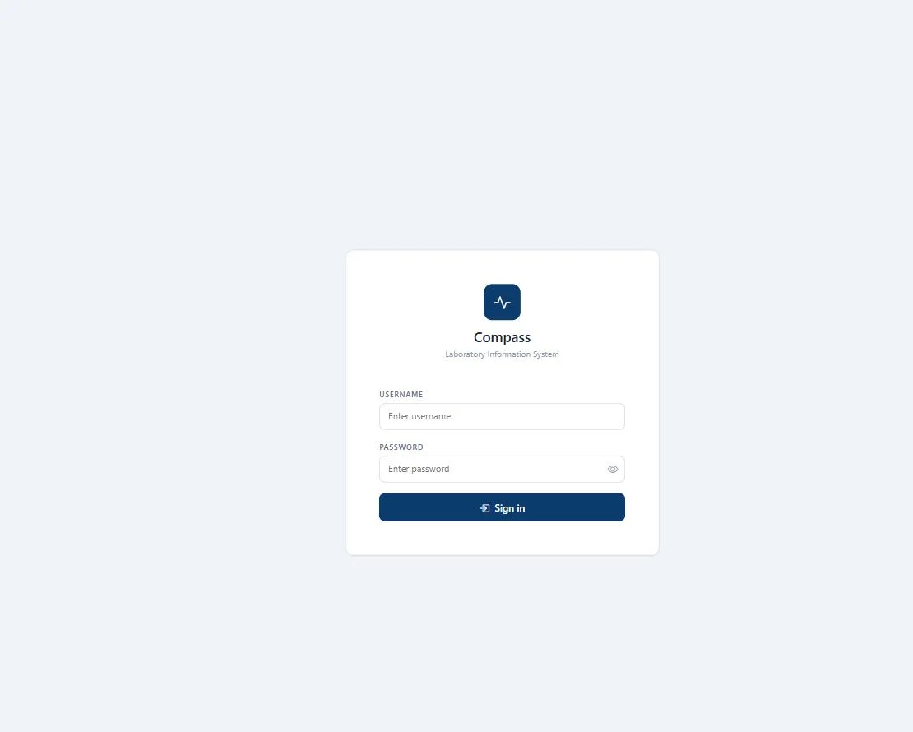
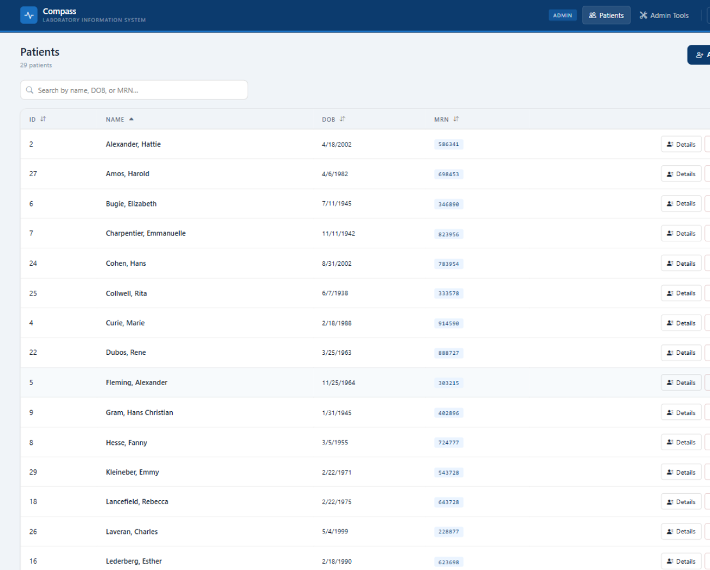
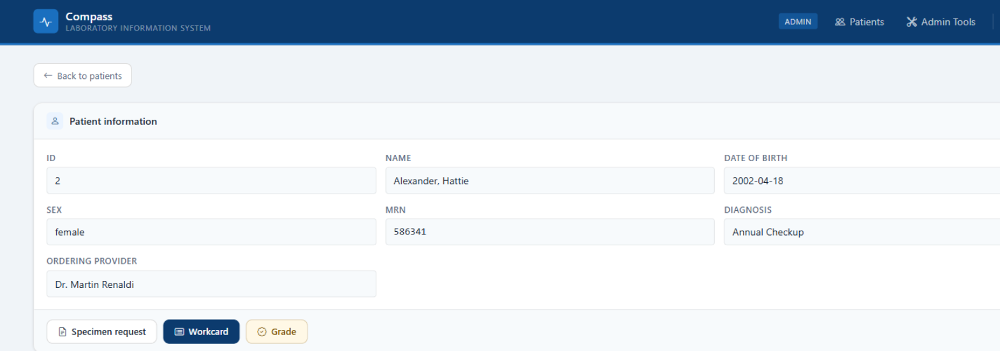
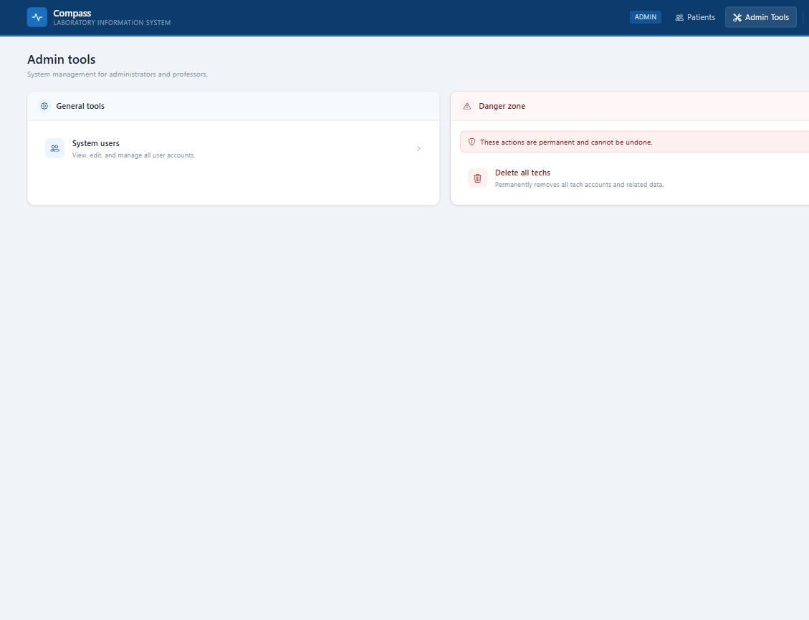

NorthStar LIS
Laboratory Information System | Senior Project
A full-featured lab management system built with modern web technologies, designed to streamline lab operations, patient record management, and result tracking.
Project Overview
NorthStar LIS is a full-stack Laboratory Information System built to manage patients, specimen requisitions, and microbiology workcards in a clinical setting.
It replaces the paper workflows still common in educational labs, letting users create, edit, track, and complete laboratory records efficiently.
This project demonstrates:
- Full-stack software engineering.
- Database design and relational data integrity.
- Secure authentication and role-based authorization.
- Real-world healthcare workflow modeling.
- Friendly, task-oriented UX design.
Technologies Used
- Frontend: Vue.js, Bootstrap
- Backend: Node.js, Express
- API & Data: Axios, Faker.js
Inside the System

Secure Sign-In
Every session starts behind JWT-based authentication with role-aware routing, so techs, students, and professors land on tools scoped to their permissions from the first click.

Patient Roster
A searchable, sortable roster of patients assigned to the current user, resolving MRNs and specimen requisitions down to individual records without a full page reload.

Patient Record
Drilling into a patient surfaces demographics, ordering provider, and diagnosis alongside quick actions for specimen requests, workcards, and instructor grading.

Admin Controls
Professors manage student and tech accounts, while a clearly separated danger zone guards destructive actions, like bulk account deletion, behind explicit confirmation.